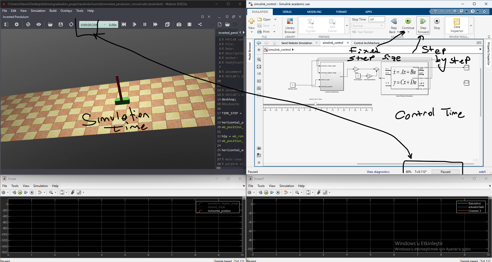

Running Simulations¶
This guide explains how to start, control, and monitor Webots-Simulink simulations.
Simulation Control Interface¶

The simulation is controlled through both Webots and Simulink interfaces. Webots handles physics simulation while Simulink manages the control algorithms.
Starting a Simulation¶
Step 1: Launch Webots¶
- Open your Webots world file (
.wbt) - Verify the robot controller is set to
<extern> - Keep Webots in pause mode initially
Step 2: Run MATLAB Controller¶
Execute the main controller script in MATLAB:
% Initialize the robot
wb_robot_init();
% Load Simulink model
model_name = 'controller_model';
load_system(model_name);
open_system(model_name);
% Start simulation
set_param(model_name, 'SimulationCommand', 'start');
Step 3: Start Webots Simulation¶
Press the Play button in Webots or use the keyboard shortcut.
Simulation Controls¶
| Action | Webots Interface | MATLAB Command |
|---|---|---|
| Start | Click Play button | set_param(model, 'SimulationCommand', 'start') |
| Pause | Click Pause button | set_param(model, 'SimulationCommand', 'pause') |
| Stop | Click Stop button | set_param(model, 'SimulationCommand', 'stop') |
| Step | Click Step button | set_param(model, 'SimulationCommand', 'step') |
| Reset | Click Reset button | wb_supervisor_simulation_reset() |
Step-by-Step Simulation¶
For debugging purposes, you can advance the simulation one step at a time:
% Single step execution
while wb_robot_step(TIME_STEP) ~= -1
% Read sensors
position = wb_gps_get_values(gps);
orientation = wb_inertial_unit_get_roll_pitch_yaw(imu);
% Process control algorithm
control_output = controller(position, orientation);
% Send commands
wb_motor_set_velocity(motor, control_output);
% Optional: pause for visualization
pause(0.01);
end
Real-Time Monitoring¶
Using Simulink Scopes¶
Add Scope blocks to visualize signals in real-time:
- Drag a Scope block from the Simulink library
- Connect it to the signal you want to monitor
- Double-click to open the scope window during simulation
Using MATLAB Command Window¶
Print values to the command window:
% Inside simulation loop
fprintf('Position: [%.3f, %.3f, %.3f]\n', position(1), position(2), position(3));
fprintf('Orientation: [%.3f, %.3f, %.3f]\n', orientation(1), orientation(2), orientation(3));
Data Logging¶
Log simulation data to workspace variables:
% Pre-allocate arrays
max_steps = 10000;
position_log = zeros(max_steps, 3);
time_log = zeros(max_steps, 1);
step = 1;
while wb_robot_step(TIME_STEP) ~= -1 && step <= max_steps
position_log(step, :) = wb_gps_get_values(gps);
time_log(step) = step * TIME_STEP / 1000;
step = step + 1;
end
% Plot results
figure;
plot(time_log(1:step-1), position_log(1:step-1, :));
xlabel('Time (s)');
ylabel('Position (m)');
legend('X', 'Y', 'Z');
Simulation Video¶

Simulation Parameters¶
Time Step Configuration¶
| Parameter | Typical Value | Description |
|---|---|---|
TIME_STEP |
16 ms | Webots simulation step |
FixedStep |
0.016 s | Simulink solver step |
StopTime |
inf | Continuous operation |
Ensure these values match between Webots and Simulink for proper synchronization.
Performance Settings¶
% Simulink model configuration
set_param(model_name, 'Solver', 'ode4');
set_param(model_name, 'FixedStep', '0.016');
set_param(model_name, 'SimulationMode', 'normal');
% For faster-than-realtime simulation
set_param(model_name, 'SimulationMode', 'accelerator');
Stopping a Simulation¶
Graceful Shutdown¶
% Stop Simulink
set_param(model_name, 'SimulationCommand', 'stop');
% Cleanup Webots connection
wb_robot_cleanup();
% Close model (optional)
close_system(model_name, 0);
Emergency Stop¶
If the simulation becomes unresponsive:
- Press Ctrl+C in MATLAB command window
- Click Stop in Webots
- If necessary, close Webots from Task Manager
Common Issues¶
| Issue | Cause | Solution |
|---|---|---|
| Simulation doesn't start | Controller not set to <extern> |
Check Webots robot settings |
| Simulation runs slowly | Time step mismatch | Verify TIME_STEP values match |
| Data not updating | Missing wb_robot_step() call |
Ensure step function is called each iteration |
| Motors not moving | Actuators not enabled | Call wb_motor_set_position() with INFINITY for velocity control |
Next Steps¶
- Customization: Learn how to modify the bridge for different robots
- Debugging: Troubleshoot simulation issues